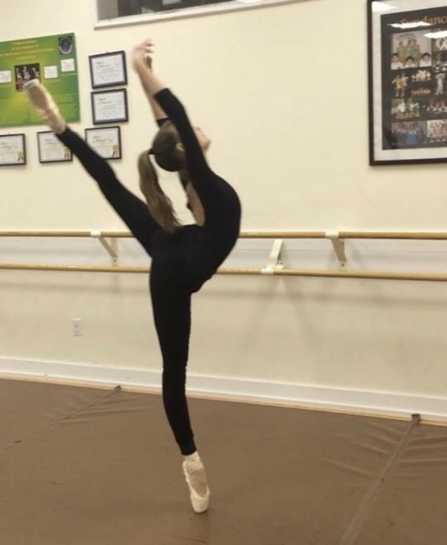
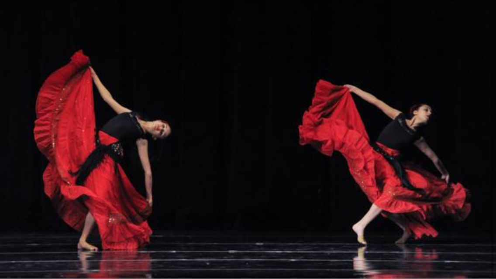
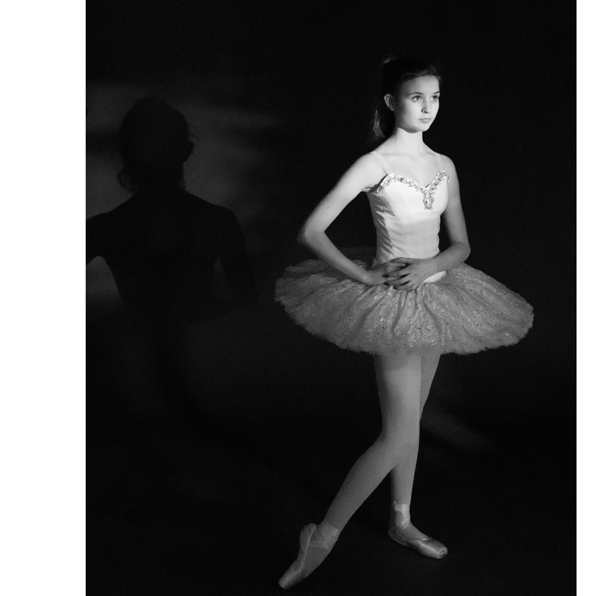
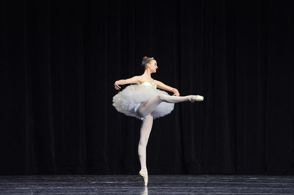
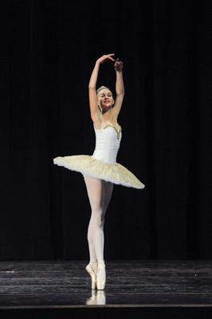

|
Ilona Demler Hello! I'm a PhD student at Caltech advised by Pietro Perona and Georgia Gkioxari. Previously, I graduated from Harvard with a bachelor's degree in physics, where I worked with Michael Brenner. My graduate research is funded by the NSF Graduate Research Fellowship and the Caltech EAS Chair Scholarship. I'm interested in computer vision problems involving understanding the dynamic, 3D world. Currently, I'm working on dynamic human pose estimation and action analysis from video, and dabbling in humanoid robotics. I'm best reachable via email at idemler at caltech dot edu. |

|
Publications

Blake Werner, Ilona Demler, Pietro Perona, Aaron D. Ames
Under Review, 2026

Ilona Demler, Xinran Xie, Blake Werner, Anna Szczuka, Pietro Perona
Under Review, 2026

Ilona Demler, Saumya Chauhan, Georgia Gkioxari
NeurIPS, 2025
News
Other Adventures

Lucas Woodley, Ilona Demler, Sarah Lightbody, Uriel Martinez, Clara Nevins, Indumathi Prakash, Daniel L. Shapiro
The Program on Negotiation at Harvard Law School and the Harvard International Negotiation Program

Fun
In a past life I trained to become a professional ballet dancer, and studied briefly at the Bolshoi Ballet Academy in Moscow. Ballet inspired my passion for understanding human motion and the art of correct technical movement. Ballet training, much like all serious athletic pursuits, takes a toll on the body. I have beeen in and out of physical therapy throughout the past two decades (thankfully nothing permanent). As a result I am also very passionate about injury prevention, rehabilitation, and exercises for longevity. I am always looking to apply my work to this domain.
Nowadays, outside of research, I play and watch a lot of tennis. I also enjoy pilates, swimming, hiking, and generally photosynthesizing. Indoors, I love reading (flash fiction and memoirs), journaling, and chess.





Writing
I am always reading something, and when I can I try to write up my thoughts. Here are some pieces on stuff I've read over the past few years. Some of these were written for literature classes I had the fortune of taking while at Harvard:
- The Necessary, But Unattainable Reality of Faith in a Cruel World // Hemingway’s A Farewell to Arms
- Leniency and Ignorance: Scenes of Survival on the American Frontier // Cather’s My Antonia and Robinson’s Housekeeping
- “Leveling Both Interiority and Exteriority into the Flatness of a Crushed Soul”: Hemon’s “Smithereens” // Aleksandar Hemon’s “Smithereens”
- Playing by the Rules: Holding Newland Archer Responsible for His Non-Decisions // Wharton’s The Age of Innocence
- Costuming and the Negation of Self of Bauhaus in Relation to VALIE EXPORT // Bauhaus theater and VALIE EXPORT
Original Website Template credits: Jon Barron